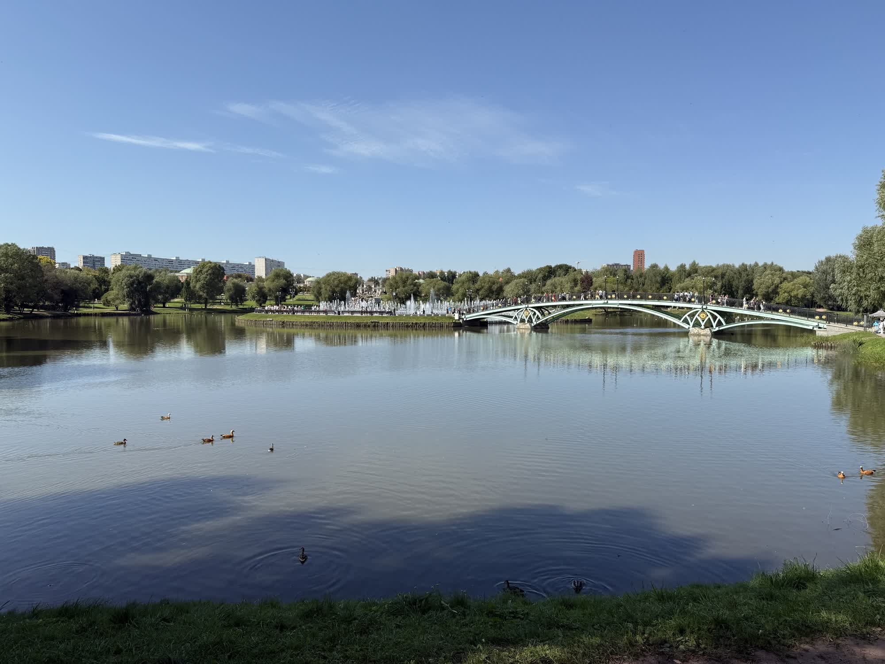
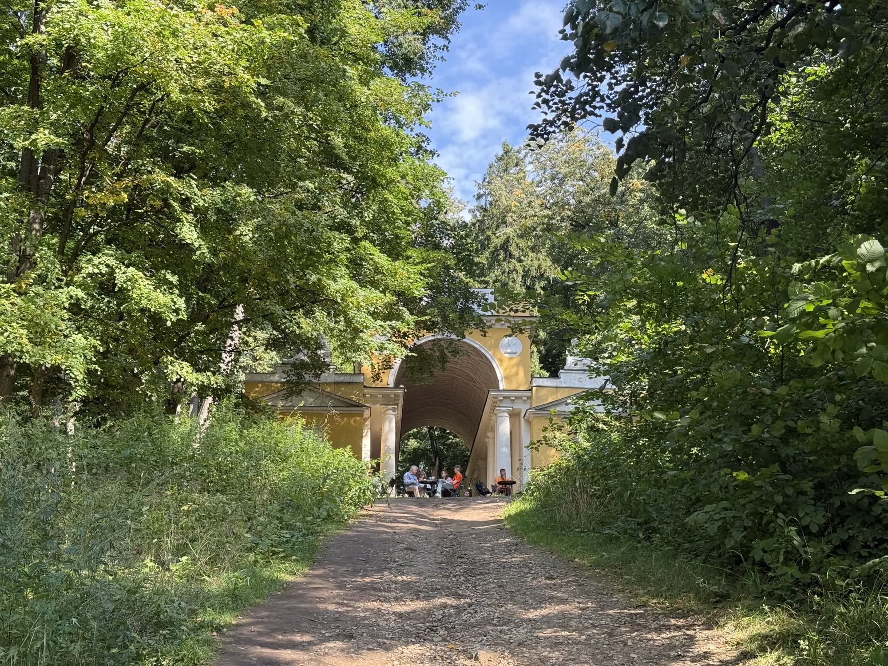

Фото



Музей-заповедник «Царицыно» — крупнейший музей-заповедник Москвы, расположенный на юге города. Дворцово-парковый ансамбль был заложен по указу Екатерины II в 1776 году как её загородная резиденция, однако императрица так и не увидела завершённый дворец.
Над созданием комплекса более 20 лет трудились выдающиеся архитекторы Василий Баженов и Матвей Казаков,
создав крупнейшую в Европе псевдоготическую постройку XVIII века. После масштабной реконструкции 2005–2007 годов Царицыно обрело второе рождение.
Это место для тех, кто хочет увидеть уникальное сочетание дворцовой архитектуры, пейзажного парка и современных музейных экспозиций.
© Все права защищены.